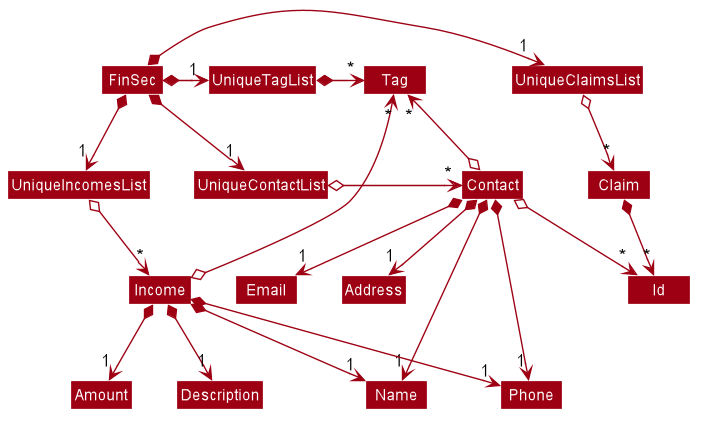

By: AY1920S1-CS2103T-W12-1 Since: Aug 2019 Licence: MIT
1. Design
1.1. Architecture
The Architecture Diagram given above explains the high-level design of the App. Given below is a quick overview of each component.
-
At app launch: Initializes the components in the correct sequence, and connects them up with each other.
-
At shut down: Shuts down the components and invokes cleanup method where necessary.
Commons represents a collection of classes used by multiple other components.
The following class plays an important role at the architecture level:
-
LogsCenter: Used by many classes to write log messages to the App’s log file.
The rest of the App consists of four components.
Each of the four components
-
Defines its API in an
interfacewith the same name as the Component. -
Exposes its functionality using a
{Component Name}Managerclass.
For example, the Logic component (see the class diagram given below) defines it’s API in the Logic.java interface and exposes its functionality using the LogicManager.java class.
How the architecture components interact with each other
The Sequence Diagram below shows how the components interact with each other for the scenario where the user issues the command delete 1.
delete 1 commandThe sections below give more details of each component.
1.2. UI component
API : Ui.java
The UI consists of a MainWindow that is made up of parts e.g.CommandBox, ResultDisplay, PersonListPanel, StatusBarFooter etc. All these, including the MainWindow, inherit from the abstract UiPart class.
The UI component uses JavaFx UI framework. The layout of these UI parts are defined in matching .fxml files that are in the src/main/resources/view folder. For example, the layout of the MainWindow is specified in MainWindow.fxml
The UI component,
-
Executes user commands using the
Logiccomponent. -
Listens for changes to
Modeldata so that the UI can be updated with the modified data.
1.3. Logic component
API :
Logic.java
-
Logicuses theAddressBookParserclass to parse the user command. -
This results in a
Commandobject which is executed by theLogicManager. -
The command execution can affect the
Model(e.g. adding a person). -
The result of the command execution is encapsulated as a
CommandResultobject which is passed back to theUi. -
In addition, the
CommandResultobject can also instruct theUito perform certain actions, such as displaying help to the user.
Given below is the Sequence Diagram for interactions within the Logic component for the execute("delete 1") API call.
delete 1 Command
The lifeline for DeleteCommandParser should end at the destroy marker (X) but due to a limitation of PlantUML, the lifeline reaches the end of diagram.
|
1.4. Model component
API : Model.java
The Model,
-
stores a
UserPrefobject that represents the user’s preferences. -
stores the Address Book data.
-
exposes an unmodifiable
ObservableList<Person>that can be 'observed' e.g. the UI can be bound to this list so that the UI automatically updates when the data in the list change. -
does not depend on any of the other three components.
As a more OOP model, we can store a Tag list in Address Book, which Person can reference. This would allow Address Book to only require one Tag object per unique Tag, instead of each Person needing their own Tag object. An example of how such a model may look like is given below. |
1.5. Storage component
API : Storage.java
The Storage component,
-
can save
UserPrefobjects in json format and read it back. -
can save the Address Book data in json format and read it back.
1.6. Common classes
Classes used by multiple components are in the seedu.addressbook.commons package.
2. Implementation
This section describes some important details on how the features are implemented
2.1. Help feature
The help command allows for users to generate a HelpCommand object in FinSec. It then provides one of various types of help dependant on the request of the user.
The format for the help command is as follows:
help cmd/<COMMAND> type/<TYPE>
2.1.1. Overview
The Help mechanism is facilitated by HelpCommand and HelpCommandParser, taking in the following inputs from the user: SecondaryCommand and Type.
After the parameters have been parsed, the relevant CommandResult object will be instantiated based on the input Type and pertaining to the input SecondaryCommand.
2.1.2. Current Implementation
The activity diagram below shows how it would look like from a user’s point of view during the creation of a HelpCommand object.
Figure 2.1.2.1 describes the workflow of the help command
command is entered.
help commandThe series of steps below explain the process and current implementation of the help command.
Step 1 : The user requests for help.
Step 2 : The HelpParser then calls the execute function of the HelpCommand.
Step 3 : The HelpCommand then returns a CommandResult based on what parameters the user enters.
-
If no parameters are entered, the
HelpCommandclass returns with aCommandResultrequesting to show a basichelpWindow -
If the incorrect parameters are entered, an error message will be sent as feedback to the user in the
CommandResult
Step 4 : If the correct parameters are entered, the appropriate type of help is given.
-
If the user chooses
Typebrief, a brief description will be returned as feedback to the user in theCommandResult -
If the user chooses
Typeguide, theHelpCommandclass accesses theWebLinksclass to get the String value of the respective command. It then utilises your default web browser to open up the FinSec User Guide and centers on the requested command. -
If the user chooses
Typeapi, theHelpCommandclass accesses theApiLinksclass to get the String value of the respective command. It then generates an API.html file of the requested command on the local system and accesses it.
Step 5 : The help command resolves
2.1.3. Why was it implemented this way?
With regards to help, the current implementation was sorely lacking. The only way the user could get useful help was to access the User Guide which requires an internet connection. This meant that there was basically no offline help available with regards to command lists or what commands do. With the multi-faceted approach, the user can control the depth of help and have more options available to them in general.
2.1.4. Alternatives Considered
We have considered between two differing help philosophies.
| Methods of Help | Pros and Cons |
|---|---|
Multi-faceted help |
Pros : Provides multiple types of help .
Cons : There is a risk of over-complicating the |
Simplistic Help |
Pros : Use as-is. No additional coding required. Cons : Requires an online connection to be able to get help. |
We have settled on adopting the multi-faceted help philosophy as the current implementation of help simply does not cut it. Measures have been taken such as allowing the user to type in help with no additional
parameters to display the command list and explain the deeper features of the help command; thus retaining its simplicity.
2.2. Claim feature
The add_claim command allows for admins to register Claims into FinSec.
The format for the add_claim command is as follows:
add_claim d/<DESCRIPTION> c/<CASH AMOUNT> date/<DATE> n/<NAME> p/<PHONE NUMBER>
2.2.1. Adding a Claim
Overview
The add claim add_claim mechanism is facilitated by AddClaimCommand and AddClaimCommandParser, taking in the
following input from the user: Description, Amount, Date, Name and Phone, which will construct Claim objects.
The AddClaimCommandParser implements Parser with the following operation:
-
AddClaimCommandParser#parse()- This operation will take in a String input from the user that will createClaimobjects based on the prefixes 'd/', 'c/', 'date/', 'n/' and 'p/'. The String value after the individual prefixes will create the respective object: d/description, c/amount, date/date, n/nameand p/phone. A regex validation check will be imposed upon the creation of each argument. Any checks that fails the validation would prompt the user on the failed component.
For example:
-
datewould useParseUtil#parseDate()to ensure that the date entered is in the correct format of DD-MM-YYYY. -
amountwould useParserUtil#parseAmount()to ensure that cash amount would only contain numbers and a maximum of 2 decimal places. -
phonewould useParserUtil#parsePhone()to ensure that the phone number entered would only contain numbers that are at least 3 numbers long.-
After validation checks are completed with no errors, a
Claimobject will be constructed withId,Description,Amount,Date,NameandPhoneas the parameters. -
AddClaimCommandParserwould then return anAddClaimCommandobject withClaimas its attribute. -
AddClaimCommand#executechecks against all existing contacts against the inputsnameandphoneto make sure the contact exists.
-
Example
Given below is an example usage scenario of how add_claim mechanism behaves at each step.
Step 1: The user executes:
add_claim d/Logistics for Sports Day c/150.60 date/21-12-2019 n/Melissa p/99875432`
This adds a Claim of $150.60 for Logistics for Sports Day by Melissa, with a phone identity of 99875432.
Step 2: LogicManager would use FinSecParser#parse() to parse input from the user.
Step 3: FinSecParser would determine which command is being used and creates the respective parser. In this case,
AddClaimCommandParser is being created and the user’s input would be passed in as a parameter.
Step 4: AddClaimCommandParser would do a validation check on the user’s input before creating and returning a
AddClaimCommand object with Claim as its attribute.
Step 5: LogicManager would execute AddClaimCommand#execute(), checking whether there is an existing Claim and also
whether there is an existing contact for the claim, then adding the PendingClaim into the Model which is handled by the
ModelManager.
Step 6: AddClaimCommand would return a CommandResult to the LogicManager which would then be returned back to
the user.
2.2.2. Approving a Claim
This feature allows the user to approve a PendingClaim from the UniqueClaimList through its index.
The approve claim feature is facilitated by the ApproveClaimCommandParser and the ApproveClaimCommand.
The ApproveClaimCommand is part of the logic component of our application. It interacts with the model and storage
components of our application.
2.2.3. Rejecting a Claim
This feature allows the user to reject a PendingClaim from the UniqueClaimList through its index.
The approve claim feature is facilitated by the RejectClaimCommandParser and the RejectClaimCommand.
The RejectClaimCommand is part of the logic component of our application. It interacts with the model and storage
components of our application.
2.3. Income feature
The add_income command allows for users to register new Income objects into FinSec.
The format for the add_income command is as follows:
`add_income d/<description> c/<cash amount> date/<date> n/<name> p/<phone number>`
2.3.1. Adding an Income
Overview
The add income add_income mechanism is facilitated by AddIncomeCommand and AddIncomeCommandParser. It takes in the following input from the user:
description, cash amount, name and phone number, which will construct individual objects that construct an Income object.
The AddIncomeCommandParser implements Parser with the following operation:
-
AddIncomeCommandParser#parse()- This operation will take in aStringinput from the user that will create individual objects based on the prefixes 'd/', 'c/', 'date/', 'n/' and 'p/'. TheStringvalue after the individual prefixes will create the respective object: d/description, c/cash amount, date/date, n/nameand p/phone. A validation check will be imposed upon the creation of each object. Any checks that fails the validation would prompt the user on the failed component. For example:-
cash amountwould useParserUtil#parseAmount()to ensure that cash amount would only contain numbers and a maximum of 2 decimal places. -
phonewould useParserUtil#parsePhone()to ensure that the phone number entered would only contain numbers that are at least 3 numbers long. -
datewould useParseUtil#parseDate()to ensure that the date entered is in the correct format of DD-MM-YYYY.
-
-
After validation checks are completed with no errors, an
Incomeobject is then constructed withdescription,cash,date,nameandphoneas the parameters. -
AddIncomeCommandParserwould then return aAddIncomeCommandobject withIncomeas the parameter.
Example
Given below is an example usage scenario of how add_income mechanism behaves at each step.
Step 1: The user executes add_income d/shirt sales c/100.05 date/11-11-2019 n/John Doe p/91111111 to add an income of $100.05 of shirt sales received from John Doe who is contactable at 91111111.
Step 2: LogicManager would use FinSecParser#parse() to parse input from the user.
Step 3: FinSecParser would determine which command is being used and creates the respective parser. In this case, AddIncomeCommandParser is being created and the user’s input would be passed in as a parameter.
Step 4: AddIncomeCommandParser would do a validation check on the user’s input before creating and returning a AddIncomeCommand object with Income as the parameter.
Step 5: LogicManager would use AddIncomeCommand#execute() to add the Income into the Model which is handled by the ModelManager.
Step 6: AddIncomeCommand would return a CommandResult to the LogicManager which would then be returned back to the user.
2.3.2. Deleting an Income
This feature allows the user to delete an income entry from the Unique Incomes List through its index.
The delete income feature is facilitated by the DeleteIncomeCommandParser and the DeleteIncomeCommand.
The delete income command is part of the logic component of our application. It interacts with the model and storage components of our application.
Overview
The DeleteIncomeCommandParser implements Parser with the following operation:
-
DeleteIncomeCommandParser#parse()- This operation will take in aintinput from the user which will delete the income entry at the index which has entered. Any invalid format of the command will be prompted by the command parser.
Current Implementation
The delete income feature is executed by the DeleteIncomeCommand. Currently, the deletion of any income entry is done based on the INDEX of the income entry.
During the design of our delete function, we considered between two alternatives.
| Design Consideration | Pros and Cons |
|---|---|
Deletion by Income description |
Pros : It may be more intuitive for users to delete an income through the description of the income. Cons : Incomes of different entries can have similar description. The user would eventually still have to look through the income list. |
Deletion by Index (Current Choice) |
Pros : Since each income has a unique index, any deletion by the index is less prone to bugs and easier to implement. Cons : User will have to scroll the income list for the income entry and look for its index which can be inconvenient. |
We have decided to opt for the first option primarily because it reduces the number of potential bugs and the complexities involved when taking into account the different cases and scenarios upon using deletion by income description.
2.3.3. Editing an Income
This feature allows the user to edit any attribute of the income entries. There are a total of five attributes for each entry, the description of the income, the amount of money received, the date it was received, the name of the person / organisation the user received the money from and the contact number. The user can edit at least one and up to all attributes.
The edit income feature is facilitated by the EditIncomeCommandParser and the EditIncomeCommand.
The edit command is part of the logic component of our application. It interacts with the model component of our software architecture.
Overview
The EditIncomeCommandParser implements Parser with the following operation:
-
EditIncomeCommandParser#parse()- This operation will take in anintinput and one to fiveStringinput(s) from the user that will alter the attributes of current income entries based on the prefixes 'd/', 'c/', 'date/', 'n/', 'p'. TheStringvalue after the individual prefixes will alter the respective attribute it corresponds to: 'd/' forDescription, 'c/' forAmount, 'date/' forDate, 'n/' forNameand 'p/' forPhone. A validation check will be imposed upon editing of each object. Any checks that fails the validation would prompt the user on the failed component.
Current Implementation
Here is an example of a step-by-step process on how the edit command alters an attribute of the homework entry. For each step, you may follow the activity diagram at the end of this section to better understand the flow of events within FinSec when an edit_income command is entered.
Step 1 : The user launches the application and nagivates to the income page. There is a list of existing income entries in FinSec.
Step 2 : The user then wishes to alter the income description of the second entry in the income list to "Fundraising". He then types edit_income 2 d/Fundraising into the Command Line Interface(CLI) and executes it.
Step 3 : The FinSecParser (refer to logic) then reads in these attributes that have been entered and proceeds to alter the attributes of the income entry in the given index. Each attribute will be validated.
Step 4 : The FinSecParser then creates a new EditIncomeCommand based on the input of the user. When the EditIncomeCommand is executed, it interacts with the Model architecture by calling the setIncome method. The setIncome method replaces the current income entry with the new income entry containing all the desired attributes. The income entry is now updated.
2.4. Shortcut feature
This feature gives the user an option to create a shortcut when an unknown command is entered into FinSec.
Overview
To enable an easy implementation of this feature, we have created a TreeMap to store the default commands and shortcuts in the FinSecParser. Each command and shortcut have their Command Word stored as they key value (so as to ensure there are no duplicates) and Command task as the values.
All default commands and shortcuts are also initialised as CommandItem objects which would be handled by the Model Manager class whenever we add or delete a shortcut. Command classes such as ShortCutRequestCommand, CreateShortcutCommand and NoShortCutCommand are created to facilitate the
implementation of the shortcut feature.
When a user enters a command, FinSecParser would parse the input and check if the first word of the input is in the TreeMap key set. If the command word is not in the key set, FinSec would create a ShortCutRequestCommand and return the ShortCutRequestCommand object with CommandWord as the parameter.
Example
Given below is an example usage scenario of how the shortcut feature mechanism behaves at each step.
Step 1 : The user launches FinSec for the first time. The FinSecParser will be initialised. All the default commands will be added to the TreeMap using FinSecParser#initialiseDefaultCommands(). Previously created shortcuts would be added to the TreeMap from the constructor of the FinSecParser, where the ObservableList<CommandItem> will be the parameter.
Step 2 : The user enters an unknown command that is not recognised by FinSec. FinSec then returns a ShortCutRequestCommand.
Step 3 : ShortCutRequestCommand is executed in LogicManager and LogicManager would save the command word in a Stack. A CommandResult with a new Boolean value of "createShortCut" is then returned to MainWindow to display the result of the entry. The CommandResult#isCreateShortCut() sets the MainWindow#unknownEntry to true.
Step 4 : Since now the boolean value of MainWindow#unknownEntry is true, the next input would use a different execute command. Instead of the usual method LogicManager#execute(String command), the next input would be executed by LogicManager#executeUnknownInput(String command). Hence, if the subsequent input by the user is n, a NoShortCutCommand would be executed
and it would return a CommandResult with a false value of createShortCut which would reinstate back the normal state of FinSec.
Step 5 : If the user enters a value other than n, the LogicManager#executeUnknownInput(String command) would call FinSecParser#checkCommand(String currentInput, String prevInput) to check if the command is existing or not. If the command is existing, it would return another ShortCutRequestCommand object with the same input. However, if a valid default command is entered, a new CreateShortCutCommand object is returned (go back to Step 3).
-
The code snippet below shows the
FinSecParser#checkCommand(String currentInput, String prevInput)method
XYSeries public Command checkCommand(String currentInput, String prevInput) {
if (FinSecParser.commandList.containsValue(currentInput)) {
FinSecParser.commandList.put(prevInput, FinSecParser.commandList.get(currentInput));
return new CreateShortCutCommand(FinSecParser.commandList.get(currentInput), prevInput);
} else {
return new ShortCutRequestCommand(currentInput);
}
}Step 6 : When a CreateShortCutCommand object is returned, it is executed in LogicManager and LogicManager would use CreateShortCutCommand#execute() to add the CommandItem into the Model which is handled by the ModelManager.
Step 7 : CreateShortCutCommmand would then return a CommandResult to the LogicManager which would then be returned back to the user.
The following activity diagram summarises what happens when a user executes an unknown command:
Figure 2.4 is the activity diagram when a user inputs an unknown command

2.4.1. Why was it implemented this way?
In order for us to create new Command Words that gives the same functionality of a default command, it was imperative for us to create a CommandItem class that creates an object for every command with the String attributes of CommandWord and CommandTask. This way, it was possible to
create more commands as the user uses the application.
Now with creation of new commands being made possible, we have to decide how we were going to store the list of commands for frequent reference to ensure a bug-free implementation of this feature.
We considered between two alternatives.
| Data Structure Consideration | Pros and Cons |
|---|---|
ArrayList |
Pros : It may be more intuitive to implement an ArrayList. Cons : Since we have to look up the list of commands frequently, the use of an ArrayList would significantly lower the performance of FinSec. This might negatively affect user experience. |
TreeMap (Current Choice) |
Pros : Since each commandWord has 2 attributes, Cons : A TreeMap is not as intuitive to implement compared to an ArrayList or List. |
We have decided to opt for the first option primarily because it significantly improves the performance of the application.
2.5. Autocorrect feature
This feature gives the user a dropdown list of suggestions when he is typing his entry.
Overview
In order for an easy implementation of this feature, we have created a new class AutocorrectTextField that extends TextField that would be loaded into the MainWindow when the user starts the application.
The AutocorrectTextField has 2 attributes, suggestionCommands and addSuggestions which are Sets of String values to be displayed to the user upon entering their commands. suggestionCommands would give the list of suggestions and addSuggestions would give the list of additional suggestions such as n/John Doe for ease of use for the users.
The list of commands can be easily retrieved using the method FinSecParser#getCommandList().keySet() while the list of additional suggestions can be retrieved from SuggestionsStorage#getSuggestions().
Currently, when the user adds a Contact, a new AutocorrectSuggestion would be created and added to the Model by the ModelManager. The AutocorrectSuggestion that would be created will be in the String "add_claim n/<Contact.fullname()>". This would ease the addition of claims into FinSec since that a user is not able to add a claim if the contact does not exist.
Example
Given below is an example usage scenario of how the AutoCorrect feature mechanism behaves at each step.
Step 1 : The user starts typing add_contact into FinSec. Since that add_contact is a default command, it would already be in the Set of Strings in AutocorrectTextField#suggestionCommands and it would trigger the method AutocorrectTextField#changed() and the suggestions would be loaded into the UI in the MainWindow.
Step 2 : The user adds a contact into FinSec and the method AddContactCommand#execute() is executed.
-
The code snippet below shows the
AddContactCommand#execute()method
XYSeries public CommandResult execute(Model model) throws CommandException {
requireNonNull(model);
if (model.hasContact(toAdd)) {
throw new CommandException(MESSAGE_DUPLICATE_PERSON);
}
model.addContact(toAdd);
//adding the contact's name into the suggestion list.
AutocorrectSuggestion addName = new AutocorrectSuggestion("add_claim n/" + toAdd.getName().fullName);
model.addAutocorrectSuggestion(addName);
return new CommandResult(String.format(MESSAGE_SUCCESS, toAdd));
}Step 3 : An AutocorrectSuggestion object is created with the parameter "add_claim n/contact.getName().fullName".
Step 4 : The newly created AutocorrectSuggestion object is added into Model and handled by the ModelManager.
Step 5 : As the AutocorrectTextField is refreshed, the newly updated list of suggestions would be loaded by the methods FinSecParser#getCommandList().keySet() and SuggestionsStorage#getSuggestions() and ready to display for the next user input.
2.6. Budget feature
The budget command allows for users to Generate a Budget object in FinSec. It also creates a Budget Graph object and displays it via the User Interface.
2.6.1. Overview
The Budget feature relies primarily on the Claim and Income features, and serves as an extension to calculate their difference.
The Budget object calculates the cash amount values of all existing Income objects and all cash amount values of Claims that have a status of approved.
It then returns the difference in values as the budget value and creates a graph detailing the statistics for the month.
2.6.2. Current Implementation
Figure 2.6.2.1 is a sequence of steps that illustrates the interaction between various classes when the budget
command is entered.

budget commandStep 1 : The budget command is passed on to the LogicManager as commandText
Step 2 : The LogicManager::execute method then calls FinSecParser::parseCommand which receives the user input (budget) as a parameter.
Step 3 : FinSecParser then references the various command words and identifies the command to be a budget command. It then calls the BudgetCommand method.
Step 4 : This newly created BudgetCommand object is returned to the LogicManager class, which then calls the BudgetCommand::execute method.
Step 5 : The BudgetCommand then interacts with the model component of our software architecture to create a filteredList of all Income and Claim objects using the model.getFilteredClaimList() and model.getFilteredIncomeList() commands.
Step 6 : It instantiates a Budget object which contains classes such as calculateTotalExpenses() and calculateBudget() to calculate the Amount values of all the Claims, Incomes and thus use them to find the budget amount.
A BudgetGraph object is also created in parallel (Details expanded upon below)
Step 7: The BudgetCommand::execute finally completes by constructing a message string containing all these values and returning a new CommandResult with the specific message string to its calling method which is LogicManager::execute.
Step 8 : LogicManager::execute method returns a CommandResult to the calling method which is MainWindow::executeCommand
Step 9 : The specific feedback is then retrieved through CommandResult::getFeedbackToUser and set in the result display of the MainWindow.
While creating the Budget object, a BudgetGraph object is also created in parallel. The activity diagram below shows how it would look like from a user’s point of view.
Figure 2.5.2.2 describes the workflow of the budget command command is entered.

budget commandThe series of steps below demonstrates what the BudgetGraph object does in parallel to Step 6 above.
Step 6a : At the same time the Budget object is created, the BudgetGraph object is also instantiated, which is basically an XY-graph.
Step 6b : The BudgetGraph object creates a dataset by taking in the list of Claims and Incomes and parsing them to the ClaimPlotter, IncomePlotter and BudgetPlotter classes.
Step 6c : The 3 plotter classes then filter their respective lists to create new lists for the current month and start adding the points to the series.
-
The code snippet below shows the
ClaimPlotter::plotClaimsmethod
XYSeries plotClaims() {
findClaimValueAtStartOfMonth();
claimSeries.add(1, startingExpenses);
double currentExpenses = startingExpenses;
List<Claim> approvedClaimsInCurrentMonthList = findApprovedClaimsInCurrentMonth();
for (Claim claim : approvedClaimsInCurrentMonthList) {
for (int day = 2; day <= 31; day++) {
if (claim.getDate().date.getDayOfMonth() == day) {
currentExpenses += Double.parseDouble(claim.getAmount().value);
}
claimSeries.add(day, currentExpenses);
}
}
return claimSeries;
}Step 6d : Once the 3 series have been returned, the BudgetGraph then returns the completed dataset to the BudgetGraph class which then renders the image.
Step 6e : The BudgetCommand::execute method then calls the BudgetGraph::displayBudgetGraph method to display the graph image.
2.6.3. Why was it implemented this way?
With so many claims and incomes, all having differing dates, it can be hard to keep track of how much money one should have on hand at any one time.
-
We felt that while knowing how much our prospective budget would be is good, knowing it over a range of time (such as a month in the case of
BudgetGraph) would help with better planning -
We also wanted to keep track of the history of said
ClaimsandIncomesand doing it over a 1 month period ensures there will not be too visual data cluttering the screen.
2.6.4. Design Considerations
We have considered between two differing graph designs.
| Graph Design Considerations | Pros and Cons |
|---|---|
Separate Graphs based on Organisation Tags |
Pros : Displays all relevant data that the user can possibly ask for Cons : Opening a multitude of graphs will visually clutter the screen with data unless more parsing is done to sort out which graphs are required |
Single Graph (Current Choice) |
Pros : Clean and clutter-free display. Cons : It does not display as much data |
We have settled on adopting a single-graph approach as having multiple graphs open can lead to the user being overwhelmed by unnecessary data, and the code needed to achieve this result satisfactorily would be too convoluted.
2.7. Goto feature
This section describes the different Views that Goto can bring a user to. It includes an overview of the goto details and how users can interact with goto based on commands implemented with the revamp of the original list feature. It also provides some design considerations to give users an insight of how the current solutions are worked out.
2.7.1. Overview
There are various message attributes in goto command: MESSAGE_SUCCESS_CONTACTS, MESSAGE_SUCCESS_CLAIMS, MESSAGE_SUCCESS_INCOMES, MESSAGE FAILURE,
MESSAGE_USAGE that informs the user if the changing of View is successful. The attribute View is also stored as an attribute
of the command. It is taken in as the parameter and the index of this View determines the list that will be shown in the MainWindow.
2.7.2. Current Implementation
Figure 2.4.2.1 is a sequence of steps that illustrates the interaction between various classes when the goto command is entered.
goto claims
Figure 2.4.2.1 is a sequence of steps that illustrates the interaction between various classes when the goto contacts
command is entered.

goto contacts command1) The only parameter after the goto command in the user input is passed into the LogicManager::execute method of the LogicManager instance.
2) The LogicManager::execute method calls FinSecParser::parseCommand which receives the user input as a parameter.
-
This user input which is in
Stringformat is then formatted, the first word before the space is taken as the command word and the rest of the String is grouped together as the argument that will be used later by the GotoCommandParser. -
With the command word determined, the FinSecParser instance identifies the command as a
gotocommand and constructs an instance of the GotoCommandParser.
3) FinSecParser calls the GotoCommandParser::parse method. This instance of GotoCommandParser then takes in the rest of the string,
in this case: claims
-
A
Viewinstance is then created when the ParserUtil:parseView method is called. This method takes in the argument from the GotoCommandParser::parse method parameter and returns a GotoCommand with the View instance. This View forms the gotoView attribute of this specific GotoCommand instance. -
When the argument for the GotoCommandParser::parse method is not recognised or present, a
ParseExceptionwill be thrown with an error message that asks for the proper usage of the goto Command.
4) This newly created GotoCommand object is returned to the LogicManager instance through the GotoCommandParser and FinSecParser objects.
5) In the LogicManager object, it then calls the GotoCommand::execute method
-
The method takes in a
Modelobject to access the application’s data context, the general storage of data for the application -
The activity diagram below shows the
GotoCommand::executemethod
Figure 2.5.2.2 is the activity diagram of the goto command

-
The model parameter passed into the
GotoCommand::executemethod is checked to be not null is made before the rest of the method continues. -
The
View::getIndexmethod is then called to determine the gotoView for this currentGotoCommandinstance. There are 3 alternatives for this command. They are1, 2, 3. These indexes refer tocontacts,claimsandincomesrespectively.
6) Depending on which alternative is chosen based on the index of the gotoView, the model instance will then be updated with the correct list
of items.
-
If the user wants to go to contacts, the
Model::updateFilteredContactListmethod is called with a true predicate as the argument -
If the user wants to go to claims, the
Model::updateFilteredClaimListmethod is called with a true predicate as the argument -
If the user wants to go to incomes, the
Model::updateFilteredIncomeListmethod is called with a true predicate as the argument -
If the index that was retrieved through the
Model::getIndexmethod is invalid or not within these 3 numbers, then aCommandExceptionwill be thrown with theMESSAGE_FAILUREstatic attribute.
7) This GotoCommand::execute method completes by returning a new CommandResult with the specific success message to its calling method
which is LogicManager::execute.
8) LogicManager::execute method returns a CommandResult to the calling method which is MainWindow::executeCommand
-
The specific feedback is then retrieved through
CommandResult::getFeedbackToUserand set in the result display of the MainWindow.
2.7.3. Why was it implemented this way?
Our application allows for adding of claims and incomes, which are the extra features in comparison to the original AddressBook. Therefore, instead of placing all of them into the same list
-
We found the need to split them into 3 separate lists instead of placing them in the same window where a user sees 3 lists cluttered together.
-
We want the user to have a clear command to know that he/she is no longer on the contacts list and has moved on to another list.
-
In addition, with these new Views created, upon successful invocation of the
add_contacts,add_claimoradd_incomemethods by the user, the UI will change automatically to either the contact, claims or incomes page. This gives the user a clear indication if the specific entry he/she has added is successful.
2.7.4. Design Considerations
-
Change the current list to another, overtaking the same area
-
Advantage: Cleaner user interface
-
Disadvantage: Performance issues may arise when the lists get too long and this constant reloading may cause lags
-
I decided to proceed with this option because the change in tabs would allow users to be clear that they are changing a page to the specific list that they want.
-
-
Display 3 lists in the same main page
-
Pros: Can see everything in a glance
-
Cons: Main page may have performance issues too as the lists all have to be loaded at the same time
-
2.8. Check feature
This feature is an extended feature of the goto feature because this feature can only be run when the user is in the claims or contacts page. This command is called when the user wants to check each contact or claim individually.
2.8.1. Overview
Just like the Goto Command, there are various message attributes: MESSAGE_SUCCESS_CONTACT, MESSAGE_SUCCESS_CLAIM, MESSAGE_FAILURE,
MESSAGE_USAGE that informs the user if the check command was successfully executed and if so which individual pop-up is showing. The 2 lists
that will benefit from these are the contacts and claims list. It is to allow the user to see a clear and concise understanding of the
individual claim or contact. It comes in the form of a pop-up that shows the most important attributes that belong to the claim or contact.
2.8.2. Current Implementation
The check command takes in a single parameter that is the Index.
Figure 2.5.2.1 is a sequence of steps that illustrates the interaction between various classes when the check command is entered.
Figure 2.5.2.1 is a sequence of steps that illustrates the interaction between various classes when the check 1
command is entered.
check 1 command1) The only parameter after the check command in the user input is passed into the LogicManager::execute method of the LogicManager instance.
2) The LogicManager::execute method calls FinSecParser::parseCommand which receives the user input as a parameter.
-
This user input which is in
Stringformat is then formatted, the first word before the space is taken as the command word and the rest of the String is grouped together as the argument that will be used later by the CheckCommandParser. -
With the command word determined, the FinSecParser instance identifies the command as a
checkcommand and constructs an instance of the CheckCommandParser.
3) FinSecParser calls the CheckCommandParser::parse method. This instance of CheckCommandParser then takes in the rest of the string,
in this case: 1
-
An
Indexinstance is then created when the ParserUtil:parseIndex method is called. This method takes in the argument from the CheckCommandParser::parse method parameter and returns a CheckCommand with the Index instance. This Index forms the index attribute of this specific CheckCommand instance. -
When the argument for the CheckCommandParser::parse method is not recognised or present, a
ParseExceptionwill be thrown with an error message that asks for the proper usage of the check Command.
4) This newly created CheckCommand object is returned to the LogicManager instance through the CheckCommandParser and FinSecParser objects.
5) In the LogicManager object, it then calls the CheckCommand::execute method
-
The method takes in a
Modelobject to access the application’s data context, the general storage of data for the application -
The Activity Diagram below shows the
CheckCommand::executemethod
Figure 2.5.2.2 is the activity diagram of the check command
Figure 2.5.2.2 is the activity diagram of the check command
-
The model parameter in the
CheckCommand::executemethod is checked to be not null is made before the rest of the method continues. -
The method
UiManager::getStateis called to ensure the state of the currentViewis one of the 2, namelycontactsorclaims.
6) Depending on which alternative is chosen based on the index of the gotoView, the model instance will then be updated with the correct list
of items.
-
If the user is in the claims list, the method
Model::getFilteredClaimListis called to get the latest list of claims -
The specific
claimToShowis then retrieved through thegetmethod from the list -
An instance of
CommandResultis then returned with the specific success message, the boolean for showClaim in theCommandResultconstructor to be set to true and thisclaimToShowis passed into the constructor as a parameter. -
If the index that was retrieved through the
Model::getIndexmethod is invalid or larger than the size of the list, then aCommandExceptionwill be thrown with theMESSAGE_FAILUREstatic attribute.
7) This GotoCommand::execute method completes by returning a new CommandResult with the specific success message to its calling method
which is LogicManager::execute.
8) LogicManager::execute method returns a commandResult instance to the calling method which is MainWindow::executeCommand
-
The specific feedback is then retrieved through
CommandResult::getFeedbackToUserand set in the result display of the MainWindow.
9) The methods CommandResult::isClaim or CommandResult::isContact are then invoked to check if this commandResult instance is a claim or a contact
then the methods CommandResult::giveClaim or CommandResult::giveContact are called to give the specific objects respectively. Either of these objects
will then be passed as parameter to the ModelManager::handleClaim or Model::handleContact methods.
10) The code snippet below shows the Model::handleClaim method
@FXML
public static void handleClaim(Claim claim) {
IndividualClaimWindow individualClaimWindow = new IndividualClaimWindow(claim);
if (!individualClaimWindow.isShowing()) {
individualClaimWindow.show();
} else {
individualClaimWindow.focus();
}
}-
This method creates a new
IndividualClaimWindowwith the claim object that was passed as a parameter. If the window is not showing, theIndividualClaimWindow::showmethod is called else it will call theIndividualClaimWindow::focusmethod to focus on the current claim.
2.8.3. Why was it implemented this way?
The pop-up method seems to be the best way to attract the attention of the user and make sure that the user can see clearly what he wants to check at that point in time. A pop-up is also easy because it allows the user to return immediately to the lists of claims or contacts and he/she can continue to work on his tasks immediately.
2.8.4. Design Considerations
-
Show a pop-up of the individual card
-
Advantage: Clearly shows the user what he/she is checking
-
Disadvantage: Inconvenient for people with dual screens as the pop-up may appear on another screen
-
I decided to proceed with this option because it is the best way of making the individual window clear to the user.
-
-
Remove the whole list from view and isolates the desired claim or contact needed
-
Advantage: Does not require the pop-up, another window to be shown
-
Disadvantage: Might not catch the attention of the user
-
2.9. Sort Feature
This section describes the ways that a user can sort the various lists. An overview is also included on how these sorts work. It also provides some design considerations to give users an insight of how the current solutions are worked out. ==== Overview There are 2 ways that a user can sort the lists by. It gives the user flexibility in how he wants to see the lists. In addition, after sorting, the user can then employ the check method once again to see each individual object.
2.9.1. Current Implementation
The sort command takes in a 1 parameter that is the Filter. This Filter can either be name or date.
name filter works in all 3 lists. However, in contacts and incomes list, the name filter refers to the name of
the contact and in claims list, name refers to the description of the claim.
date filter works in claims and incomes list and not in contacts list because contacts are not created
with a date.
1) The 2 parameters after the sort command in the user input are name and date
2) This command is then parsed in the same way as the rest of the commands
3) The Activity Diagram below shows the SortCommand::execute method
Figure 2.7.2.1 is the activity diagram of the check command
4) To elaborate, once the sort command is called, UiManager::getState method is called to determine the current view
the application is on then implements the correct type of sort on the list.
5) The comparators shown below are examples of the various lists are sorted.
-
sortFilteredClaimListByNameis implemented with the help of a comparator that compares the descriptions of each claim withclaim.getDescription()method. The code snippet below illustrates the comparator.
class ClaimNameComparator implements Comparator<Claim> {
@Override
public int compare(Claim claim1, Claim claim2) {
return claim1.getDescription().toString().toUpperCase()
.compareTo(claim2.getDescription().toString().toUpperCase());
}
}-
sortFilteredIncomeListByDateis implemented with the help of a comparator that compares the dates of each income withincome.getDate().getLocalDate()method. The code snippet below illustrates the comparator.
class IncomeDateComparator implements Comparator<Income> {
@Override
public int compare(Income income1, Income income2) {
return income1.getDate().getLocalDate()
.compareTo(income2.getDate().getLocalDate());
}
}-
sortFilteredClaimListByStatusis implemented with the help of a comparator that compares the statuses of each claim. The order is as such: Pending, Approved, Rejected. There are 9 cases of comparison between 2 claims. The code snippet below illustrates the comparator.
class ClaimStatusComparator implements Comparator<Claim> {
@Override
public int compare(Claim claim1, Claim claim2) {
if (claim1.getStatus().equals(Status.PENDING) && claim2.getStatus().equals(Status.APPROVED)) {
return -1;
} else if (claim1.getStatus().equals(Status.PENDING) && claim2.getStatus().equals(Status.PENDING)) {
return 0;
} else if (claim1.getStatus().equals(Status.PENDING) && claim2.getStatus().equals(Status.REJECTED)) {
return -1;
} else if (claim1.getStatus().equals(Status.APPROVED) && claim2.getStatus().equals(Status.REJECTED)) {
return -1;
} else if (claim1.getStatus().equals(Status.APPROVED) && claim2.getStatus().equals(Status.APPROVED)) {
return 0;
} else if (claim1.getStatus().equals(Status.APPROVED) && claim2.getStatus().equals(Status.PENDING)) {
return 1;
} else if (claim1.getStatus().equals(Status.REJECTED) && claim2.getStatus().equals(Status.PENDING)) {
return 1;
} else if (claim1.getStatus().equals(Status.REJECTED) && claim2.getStatus().equals(Status.REJECTED)) {
return 0;
} else if (claim1.getStatus().equals(Status.REJECTED) && claim2.getStatus().equals(Status.APPROVED)) {
return 1;
} else {
return 0;
}
}
}2.9.2. Why was it implemented this way?
The major implementation difference for claims list sorted by name, it is sorted based on the description of each
claim. This was implemented like this because of the check feature. The check feature in the contacts list allows
the user to see what claims are under the user. When a user is in the claims page, he/she will only need to sort based
on descriptions to prevent redundant information through different commands.
The 2 different filters allow the user to be able to look through the lists based on what is important to him/her. date
filter is especially important so the user can check what are the latest or oldest claims. name filter helps the user
find the various contacts/claims/incomes. It doubles up as a find or filter function to let the user find the specific
object he/she is finding.
2.9.3. Design Considerations
-
Sorting of the claims list based on description
-
Advantage: Easily find the claim you are looking for
-
Disadvantage: Might be difficult to remember the names of each claim
-
-
Sorting of the claims list based on contact’s name instead
-
Advantage: Easy to know as the person’s name is probably easier to remember than the claim’s description
-
Disadvantage: Already done in check contact, where you can filter the claims of a certain contact through the
checkfeature
-
2.10. Reverse feature
This feature is exactly identical in the implementation as compared to the above sort feature. This feature sorts the various
lists based on the same filters in the reverse of natural ordering. It shows the lists in reverse lexicographical order if
name is used as filter and shows the newest entry at the top and the oldest at the bottom of the list.
Appendix A: Product Scope
Target user profile:
-
has a need to manage a significant number of contacts, claim and income
-
has to keep track of the budget for an organisation
-
prefer desktop apps over other types
-
can type fast and prefers typing over mouse input
-
is reasonably comfortable using CLI apps
-
has secretarial or finance management duties
Value proposition:
-
Simplify the tasks of the finance secretary by providing intuitive commands to commonly done tasks (check net balance, show surplus, show deficit)
-
Makes said task more cohesive by integrating 3 types of tracking (claims, budget and income) into a single application
-
Provides convenience by making it easier to manage documents and accountability for money (Cash on-hand)
-
Reduces the probability of mistakes made by the Finance Secretary by providing accurate tracking details of the various claims and accounts
Appendix B: User Stories
Priorities: High (must have) - * * *, Medium (nice to have) - * *, Low (unlikely to have) - *
| Priority | As a … | I want to … | So that I can… |
|---|---|---|---|
|
user |
ensure the contacts list to look like an address book still |
easily access people I had dealt with before |
|
busy user |
ensure the contacts list to have a filter/search bar |
easily find people in my contacts list |
|
user |
ensure the app can create Groups and Events such as Sports, Marketing, FOP etc |
manage them easier |
|
user |
ensure the app can categorise the people to the Groups and Events |
manage them easier. |
|
user |
ensure the app can help me record the amount of money I have on hand |
manage it easier. |
|
busy user |
ensure the app can help me record the amount of money I am supposed to have |
manage it easier. |
|
user |
ensure the app can help me calculate the difference of money I have vs the amount of money I am supposed to have |
manage it easier. |
|
user |
ensure the app can give me a warning when the difference of money I have on hand vs the amount of money I am supposed to have is not 0 |
be notified if something like that does happen. |
|
user |
ensure the app can show me the transactions I had with people in the past, even after the transaction is done |
keep a history of them. |
|
user |
ensure the app can show me a list of DONE people |
manage them easier. |
|
user |
ensure the app can show me a list of NOT DONE people |
manage them easier. |
|
user |
ensure the app can show me the date stamp of the transaction done |
keep a history of them. |
|
user |
ensure the app can sort the value of claims in ascending/descending order |
manage them easier. |
|
user |
ensure the app can be able to freely manipulate accessible data (add, delete, change name, change amount etc.) |
manage them easier. |
|
clumsy user |
ensure the app can app could detect any anomalies such as duplicate claims |
make less mistakes. |
|
user |
ensure the app can be colorful and vibrant but not that painful to the eye |
look at it without straining my eyes. |
|
user |
ensure the app can send notifications to my email for any major deadlines |
manage them easier. |
|
user |
ensure the app can warn me when the particular group is going to exceed their budget at a certain threshold, like let’s say ($500 left) |
be notified if something like that does happen. |
|
user |
ensure the app can show me the transaction sorted by month |
manage it easier. |
|
user |
ensure the app can show a checklist of to-dos as a Finance Secretary |
manage them easier. |
|
fellow director of the organisation |
ensure the app can transform into a to-do list for any other departments |
manage them easier. |
|
user |
ensure the app can have graphical representation of data such as pie charts |
look at it without straining my eyes. |
|
lazy user |
ensure the app can generate a pseudo report based on the claims |
not have to do it myself. |
|
clumsy user |
ensure the app can perform periodic backups |
revert the data in the event that I mess up horribly. |
|
superior of the finance secretary |
have reading access to the information related to the budget, claims and deposits |
check on the user’s work. |
|
user |
ensure the app can have some form of security |
ensure no one can see the transactions I have done before |
|
lazy user |
ensure the app can email the offending parties if there is a discrepancy or fault with the claims |
not have to do it myself |
|
cautious finance secretary |
ensure the app can check which secretary changed what details |
hold them accountable for any foul play. |
|
cautious finance secretary |
ensure the app can have an automated checking system |
prevent embezzlement of funds. |
|
user |
ensure the app can check for the petty cash holdings |
keep track of all money including petty cash. |
|
user |
ensure the app can have notifications when claims are left untouched for too long |
be notified if something like that does happen. |
|
user |
ensure the app can be customised to my needs |
make the app suit me. |
Appendix C: Use Cases
(For all use cases below, the System is FinSec and the Actor is the user, unless specified otherwise)
Use case: Adding a contact
MSS
-
User requests to add a contact
-
FinSec adds a contact
Use case ends.
Extensions
-
1a. The contact details are existing.
-
1a1. FinSec shows an error message.
Use case resumes at step 1
Use case: Editing a contact
MSS
-
User requests to view list of contacts
-
FinSec shows a list of contacts
-
User requests which contact to edit and the details to change
-
FinSec edits the contact
Use case ends.
Extensions
-
2a. The list of contacts is empty.
User case ends
-
3a. The contact is not on the list.
-
3a1. FinSec shows an error message.
Use case resumes at step 2.
-
Use case: Delete contact
MSS
-
User requests to list contacts
-
FinSec shows a list of contacts
-
User requests to delete a specific contact in the list
-
FinSec deletes the contact
Use case ends.
Extensions
-
2a. The list is empty.
Use case ends.
-
3a. The given index is invalid.
-
3a1. FinSec shows an error message.
Use case resumes at step 2.
-
Use case: Goto view
MSS
-
User requests to change view (Contacts, Claims, Income)
-
FinSec brings user to that view
Use case ends.
Extensions
-
1a. The view is invalid.
Use case resumes at step 1.
Use case: Check details of person (Only available within Claims/Contacts lists)
MSS
-
User requests to view list of people
-
FinSec shows a list of people
-
User requests which person to check by index
-
FinSec displays person
Use case ends.
Extensions
-
2a. The person list is empty.
Use case ends.
-
3a. The index entered is invalid.
-
3a1. FinSec shows an error message.
Use case resumes at step 2.
-
Use case: Add Claim
MSS
-
User requests to add claim
-
FinSec adds claim
Use case ends.
Extensions
-
2a. The details of claim is invalid.
-
2a1. FinSec shows an error.
Use case resumes at step 1.
-
Use case: Edit Claim
MSS
-
User requests to view list of claims
-
FinSec shows a list of claims
-
User requests which claim to edit
-
FinSec edits claim
Use case ends.
Extensions
-
2a. The claim list is empty.
Use case ends.
-
3a. The entered claim is invalid.
-
3a1. FinSec shows an error message.
Use case resumes at step 2.
-
Use case: Add Income
MSS
-
User requests to add income
-
FinSec adds income
Use case ends.
Extensions
-
2a. The details of income is invalid.
-
2a1. FinSec shows an error.
-
Use case resumes at step 1.
Use case: Edit Income
MSS
-
User requests to view list of income
-
FinSec shows a list of income
-
User requests which income to edit
-
FinSec edits income
Use case ends.
Extensions
-
2a. The income list is empty.
Use case ends.
-
3a. The income entered is invalid.
-
3a1. FinSec shows an error message.
Use case resumes at step 2.
-
Use case: Check details of contact
MSS
-
User requests to view list of contacts
-
FinSec shows a list of contacts
-
User requests which contact to check by index
-
FinSec displays contact and details
Use case ends.
Extensions
-
2a. The contacts list is empty.
Use case ends.
-
3a. The index entered is invalid.
-
3a1. FinSec shows an error message.
Use case resumes at step 2.
-
Use case: Check status of claims of person
MSS
-
User requests to change view to Claims
-
FinSec changes view to claims
-
FinSec shows a list of claims
-
User requests which claim to check by index
-
FinSec displays details of particular claim
Use case ends.
Extensions
-
3a. The claims list is empty.
Use case ends.
-
4a. The index entered is invalid.
-
4a1. FinSec shows an error message.
Use case resumes at step 4.
-
Use case: Filter using keyword
MSS
-
User requests to view list of income, claims or contacts
-
FinSec shows the list
-
User requests to filter the list based on keyword
-
FinSec returns a list of filtered results
Use case ends.
Extensions
-
2a. The incomes, claims or contacts list is empty.
Use case ends.
-
3a. The keyword entered is yielded no result.
-
3a1. FinSec shows an error message.
Use case resumes at step 2.
-
Use case: See budget
MSS
-
User requests to view current budget
-
FinSec shows current budget
Use case ends.
Use case: Sort claims in chronological order
MSS
-
User requests to change view to claims
-
FinSec shows the claim view
-
User requests to sort the claims
-
FinSec shows sorted claims
Use case ends.
Extensions
-
2a. The claims list is empty.
Use case ends.
Use case: Resolving claims
MSS
-
User requests to change view to claims
-
FinSec shows the claim view
-
User requests to resolve claim from index
-
FinSec resolves claim
Use case ends.
Extensions
-
2a. The claims list is empty.
Use case ends.
-
3a. The index entered is invalid.
-
3a1. FinSec shows an error message. + Use case resumes at step 2.
-
Use case: Adding tags
MSS
-
User requests to view list of contacts
-
FinSec shows a list of contacts
-
User requests to add tags to contact
-
FinSec adds tags to the contact
Use case ends.
Extensions
-
2a. The contact list is empty.
Use case ends.
-
3a. The contact index is invalid.
-
3a1. FinSec shows an error message. + Use case resumes at step 2.
-
Appendix D: Non Functional Requirements
-
Should work on any mainstream OS as long as it has Java
11or above installed. -
Should be able to hold up to 1000 persons or claims without a noticeable sluggishness in performance for typical usage.
-
A user with above average typing speed for regular English text (i.e. not code, not system admin commands) should be able to accomplish most of the tasks faster using commands than using the mouse.
-
The system should work on both 32-bit and 64-bit environments.
-
The system should respond within two seconds.
-
The system should be intuitive and usable by anyone who can use excel.
Appendix F: Product Survey
Microsoft Excel
Author: Microsoft
Pros:
-
Very common application that can be found in any computer with Microsoft Office
-
Able to customise formulas for calculation
Cons:
-
Very bare-bones UI
-
Multiple spreadsheets with multiple tabs can get very confusing
Appendix G: Instructions for Manual Testing
Given below are instructions to test the app manually.
| These instructions only provide a starting point for testers to work on; testers are expected to do more exploratory testing. |
G.1. Launch and Shutdown
-
Initial launch
-
Download the jar file and copy into an empty folder
-
Double-click the jar file
Expected: Shows the GUI with a set of sample contacts. The window size may not be optimum.
-
-
Saving window preferences
-
Resize the window to an optimum size. Move the window to a different location. Close the window.
-
Re-launch the app by double-clicking the jar file.
Expected: The most recent window size and location is retained.
-
{ more test cases … }
G.2. Deleting a person
-
Deleting a person while all persons are listed
-
Prerequisites: List all persons using the
listcommand. Multiple persons in the list. -
Test case:
delete 1
Expected: First contact is deleted from the list. Details of the deleted contact shown in the status message. Timestamp in the status bar is updated. -
Test case:
delete 0
Expected: No person is deleted. Error details shown in the status message. Status bar remains the same. -
Other incorrect delete commands to try:
delete,delete x(where x is larger than the list size) {give more}
Expected: Similar to previous.
-
{ more test cases … }
G.3. Saving data
-
Dealing with missing/corrupted data files
-
{explain how to simulate a missing/corrupted file and the expected behavior}
-
{ more test cases … }